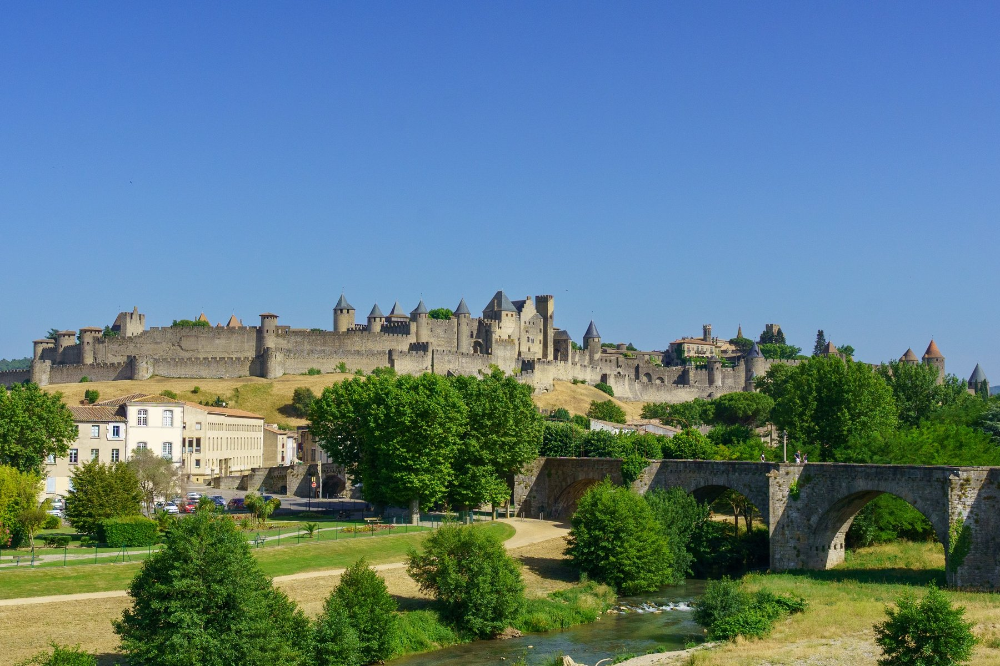
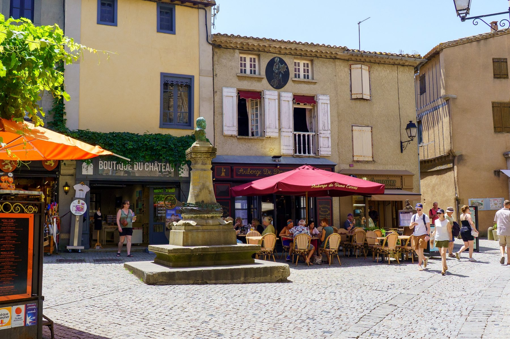
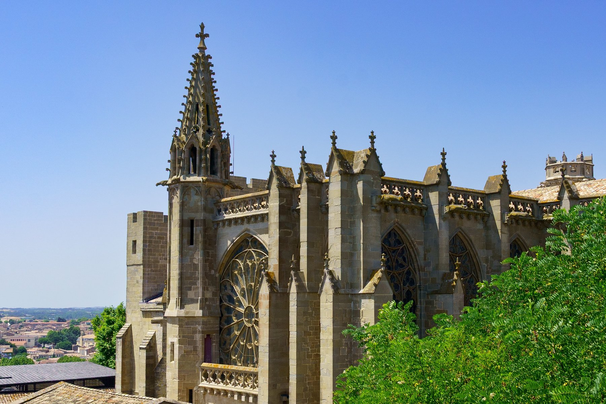
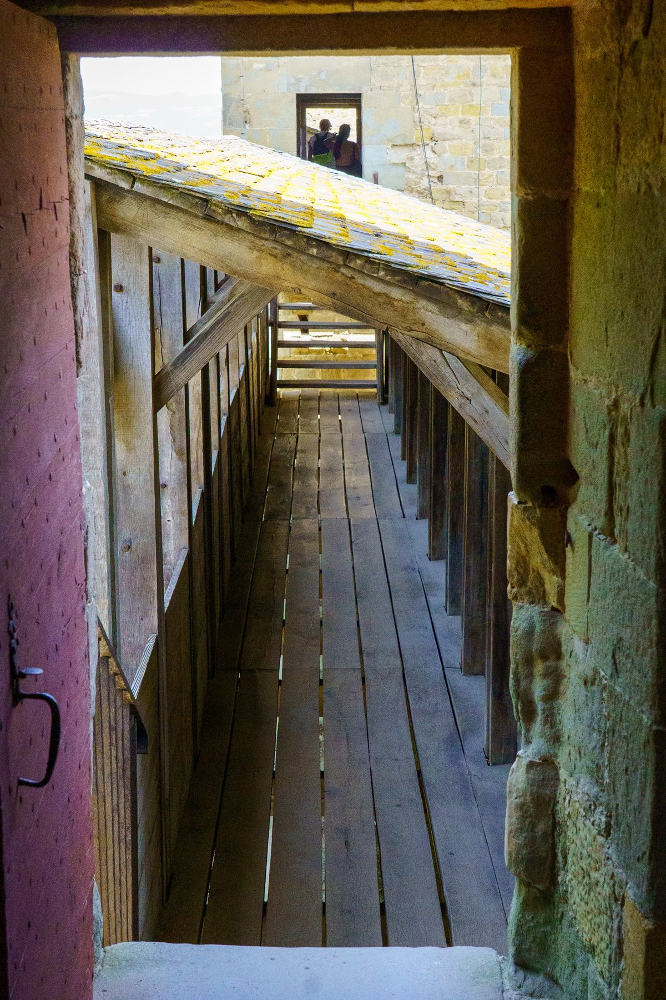
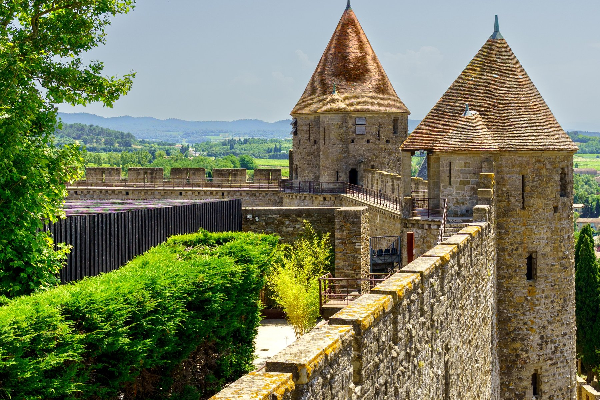
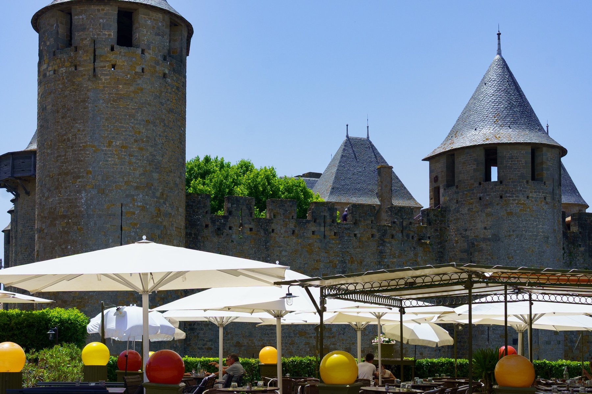
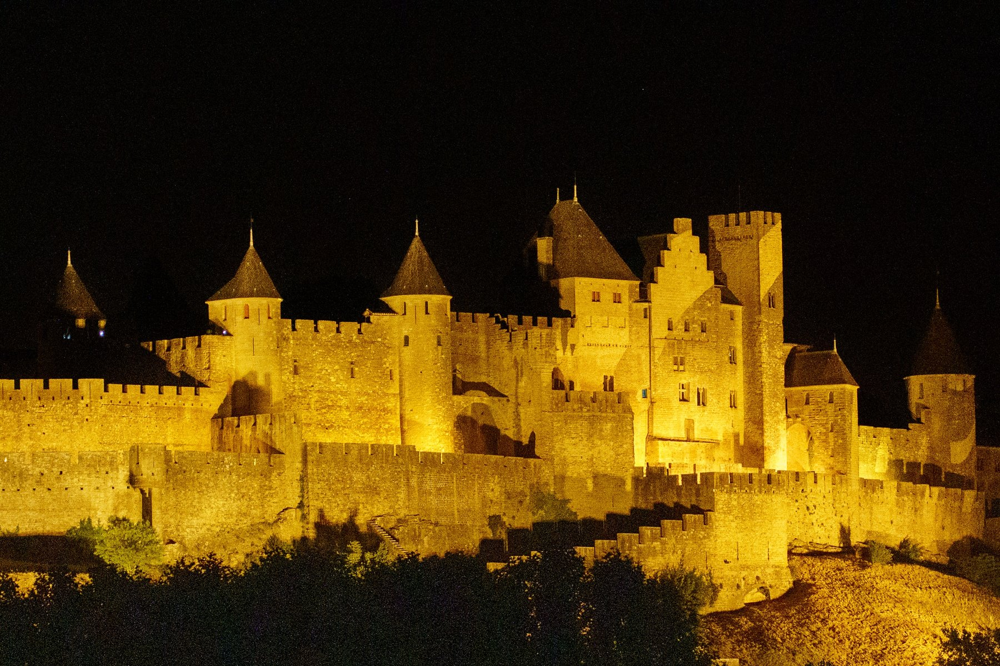

Carcassonne
Carcassonne rises from the plain like something out of a storybook — the largest fortified medieval city in Europe, its double ring of walls and towers restored to full silhouette in the 19th century by Eugène Viollet-le-Duc. Crossing the Pont Vieux over the Aude, the Cité comes into view first as a whole, walls stacked on walls climbing the hill. Inside, the medieval streets open onto small squares, tables spilling out from the Auberge de Dame Carcas, and the Basilique Saints-Nazaire-et-Celse holds its own Gothic rose window and flying buttresses in the middle of it all. A walk along the ramparts finds wooden covered walkways threading between towers, conical rooftops rising over a lavender field and the valley beyond. Evening settles in gold: the fortress walls lit up against the dark, the whole city glowing like it has for eight hundred years.






